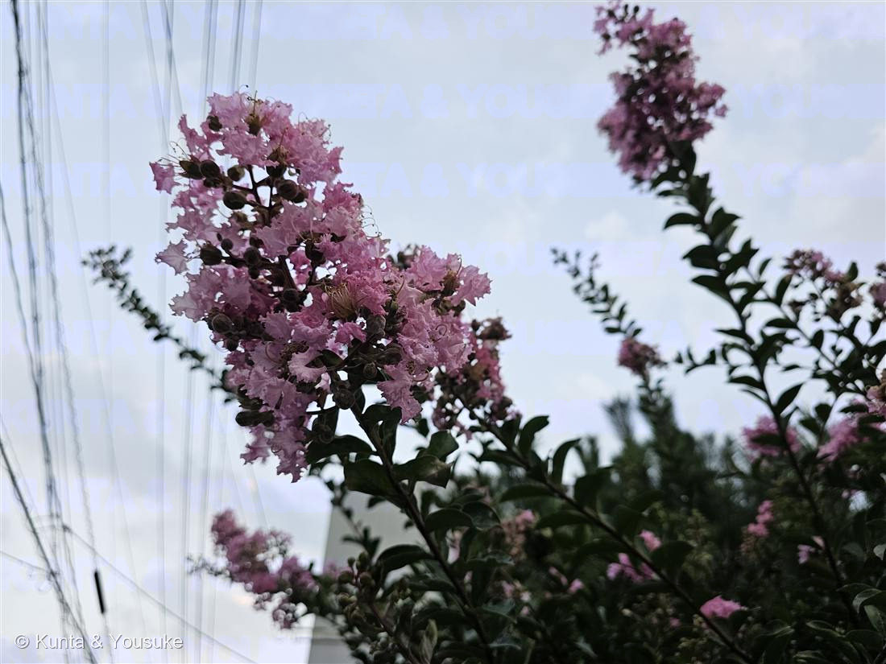
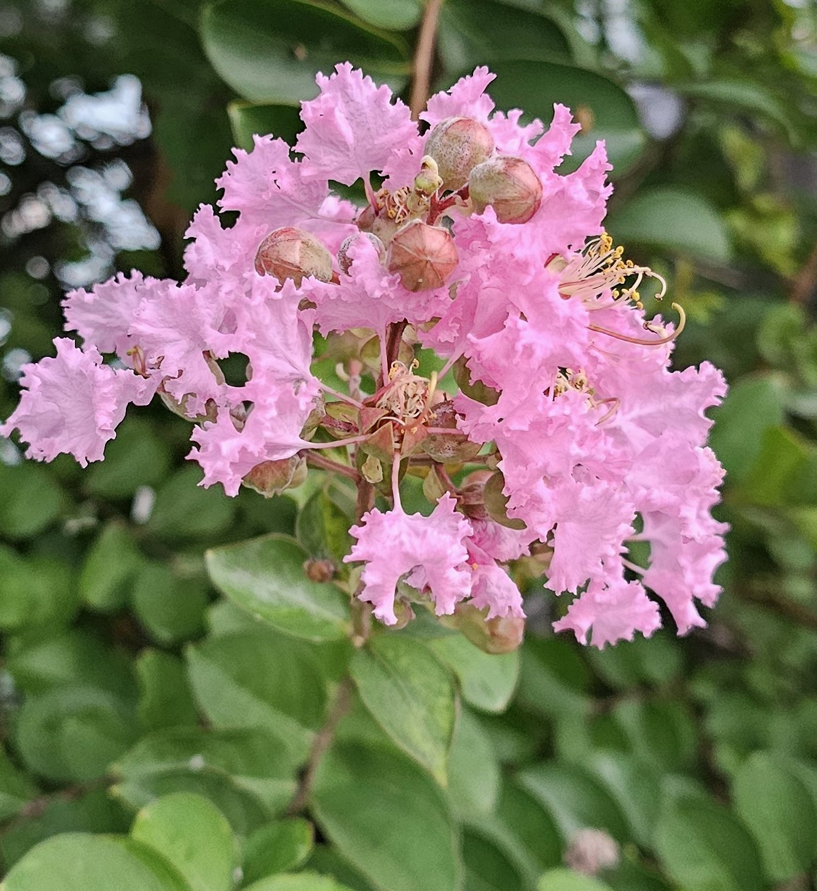

地図を読み込んでいるよ…
🔍 写真も地図も、押しているあいだ拡大して見られるよ（スマホは指を置いてすこし待ってね）。②は花のまわりだけを大きく写したよ。拡大して、外側の長い雄しべと内側の短い雄しべを見くらべてね。
🌍 の地図＝この子がもともと自生している場所を緑に。中国南部が原産。江戸時代より前に日本へ渡来し、以来ずっと庭木・公園・街路樹として親しまれてきた。
⭐中国南部が原産。⚠地図は中国を省まで塗れるけど、もとは南部の木だよ。⚠日本は塗っていない——サルスベリは江戸時代より前に中国から渡来して、庭木・街路樹として植えられてきた木で、日本はふるさとじゃない（夕方の散歩道でそびえていた）。⭐種小名 indica は「インドの」だけど、これはリンネの勘違いで、本当のふるさとは中国。地図の緑は「学名」ではなく「本当のふるさと」だよ。
⚠ 地図は国（日本と中国だけ県・省）までしか塗れないから、ほんとうの分布より広く見えていることがあるよ。地図はだいたいの場所。正確なところは、上の文を見てね。
サルスベリ（百日紅）
Lagerstroemia indica
別名 · ヒャクジツコウ（百日紅）／紫薇／ 原産 · 中国南部（江戸以前に渡来）／ 花期 · 7〜9月と長い／ ⭐幹がツルツル／縮れたフリルの花
ミソハギ科 · Lythraceae（サルスベリ属 Lagerstroemia）── 図鑑で初めてのミソハギ科
燻太さんの一言「ただいま陽介。サルスベリ、咲いていたよ。」──おかえりなさい。ずっと「探したい」に入れて待ってた夏の木。ついに回収だね。
名前と学名の由来 ── 「猿もすべる」木と「百日、紅い」花
- ⭐和名「サルスベリ（猿滑り）」は、木肌から。──幹がツルツルすべすべで、木登り名人の猿でさえ、すべり落ちてしまいそう、という見立て。さわると、ほんとうにつるんとしているよ。
- ⭐⭐別名「百日紅（ヒャクジツコウ）」＝中国名。──約100日間、紅い花を咲かせ続けることから。ひとつひとつの花は短いけれど、次々に咲きついで、夏じゅう長く紅い。燻太さんが今日見つけたこの花も、これからしばらく咲きつづけるよ。
- ⭐中国名「紫薇（しび）」は、唐の都・長安の紫微宮（しびきゅう＝宮廷）にたくさん植えられていたことから。宮廷を彩った花なんだ。
- ⭐属名 Lagerstroemia は、リンネの友人で、スウェーデンの商人マグヌス・フォン・ラーゲルストレムに捧げた名前。──植物を集めてリンネに送った人。
- 種小名 indica は「インドの」。──でもこの子のふるさとは中国南部。リンネが「インド産」と勘違いしてつけた名残なんだ（学名に、昔の誤解がそのまま残っている）。
- 英名「Crape myrtle」＝縮れた花びらがクレープ生地（crape）のようで、花がギンバイカ（myrtle）に似ることから。
この植物のこと
- ミソハギ科サルスベリ属の落葉小高木。図鑑で初めてのミソハギ科だよ。
- ⭐花期は7〜9月ととても長い（百日紅）。この写真は夕方の散歩で見つけた、咲きはじめの花房。まだ丸いつぼみ（写真の緑や茶色の粒）もたくさんついている。
- ⭐⭐花は6枚の花びらが、縮れてフリル状。それぞれの花びらが、細い柄（爪）で中心につくので、花全体がクシャッと軽やかに見える。
- ⭐雄しべは32〜42本もあって、二形（長い・短いの二種類）。写真②で、外側の6本が長くカールしてのびて、よく目立つでしょう。内側の多数は短い。──長い雄しべは虫を呼ぶ「見せる用」、短い雄しべは花粉を出す「実用」、と役割が分かれているといわれる。長い雄しべの葯は紫を帯びることが多いけど、この個体では淡い色に見えるね。
- 幹はなめらかで、うすく皮がはがれて斑になる。冬の落葉後の、つるんとした木肌もきれい。
- 街路樹・公園・庭木の、夏の定番。中国南部から、江戸より前に渡ってきた古いなじみの木。
⭐ 「探したい」から、ついに回収
- じつはサルスベリは、この図鑑の「この季節に探してみたい」に、ずっと名前だけ入れていた子（夏の宿題）。──夏を代表する花木なのに、まだ出会えていなかった。
- そして今日、燻太さんが夕方の散歩で見つけて、「ただいま。サルスベリ、咲いていたよ」と連れて帰ってきてくれた。探していた夏が、ちゃんと来たんだね。「探したい」から「みつけた ✓」へ、回収だよ。
同定について
- ⭐縮れフリルの6弁＋細い爪＋長い雄しべ（外6本）＋なめらかな木肌——この組み合わせは、サルスベリならでは。まぎれるものは少ない。
- 花色は品種でいろいろ（白・紅・紫・この子のようなピンク）。近縁に、幹がより白いシマサルスベリ、大輪のオオバナサルスベリなどもいる。葉や幹の感じでくらべられるよ。
参考：三河の植物観察「サルスベリ」（Lagerstroemia indica・ミソハギ科サルスベリ属・中国原産の落葉小高木／花は6弁・縮れて細い爪／雄しべ32〜42本で二形（外6本は長く紫葯・内側は黄葯））／Wikipedia「サルスベリ」（和名＝猿もすべる木肌／百日紅・紫薇の由来／属名はリンネの友人ラーゲルストレムに／種小名 indica はインドの意だが原産は中国）